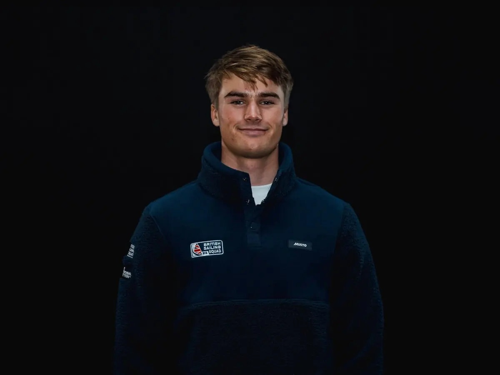

ILCA 7 · British Sailing Squad
James Foster
James progressed through the British sailing pathway from junior racing to senior squad level. His Ship Science engineering degree supports a technical approach to sailing performance, helping sailors understand both what to change and why it works.
Highlights
- 2023 Inland National Champion
- 2022 ILCA 7 National Champion
- 2019 Laser Radial Youth National Champion
- Represented Great Britain at the 2019 Youth World Championships
- Top-10 ILCA 4 World Championship result